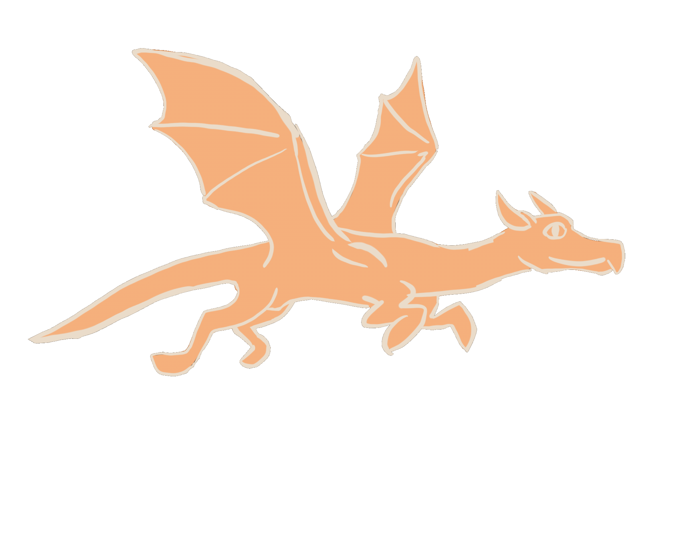

I enable artists to create by giving them expressive, adjustable, easy to use tools.
As a designer, programmer, and artist myself -- by education from the University of Pittsburgh; and past experience as an artist at Simcoach Games and an instructor at iD Tech -- I am positioned to make both technically sound, AND aesthetically pleasing, fun to use tools. In additon to my passion for games, I also foster a passion for education (which to me, go hand in hand: teaching players, exciting learners). I have a keen eye for detail and am obsessed with making someone's experience as smooth, and exciting as possible.
Currently, I am working on developing a set of enterprise scale testing and validation tool frameworks for the software developers at PNC Bank. This experience has given me experience with mass scale development operations deployments, multiple version control scenarios, and corporate logistics when it comes to software development. I have learned the importance of creating tools that are not only functional but also provide a good user experience; and that often tools are only as good as their documentation and user interface -- which ultimately teach their weilders how to use them.